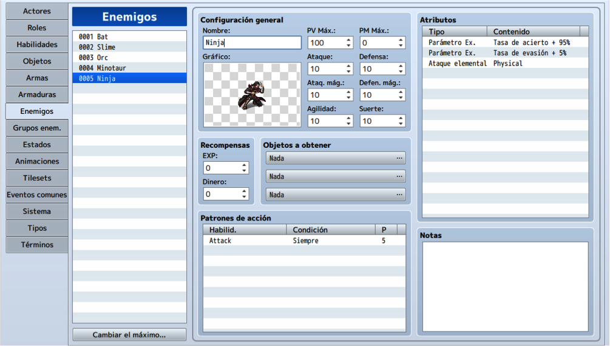

En capítulos anteriores, hemos ido creando algunos mapas con interacciones diversas, que hacen que nuestro
mapa se parezca cada vez mas a un juego en lugar solo eventos desordenados.
Ahora nos centraremos en un aspecto mas técnico del juego.
Y es que como en cualquier aventura que desarrollemos, debemos tener en cuenta que el jugador debe superar
retos específicos que le permitan tener cierta satisfacción al completarlos, por lo que las mazmorras son
una excelente forma de aplicar estos conceptos.
Sin embargo una mazmorra no se trata solo de crear un nuevo mapa y llenarlo de enemigos, si no mas bien,
debemos tener en cuenta el nivel aproximado en el que llega el jugador, el peso en la historia, el tipo de
enemigos que colocaremos, etc.
Dentro de los enemigos que podemos colocar en la mazmorra, tenemos de dos tipos: aleatorios
y estáticos.
Lo veremos ahora en detalle.
Estos enemigos son configurados directamente en las propiedades del mapa. Para ello daremos click derecho en el nombre del mapa y luego en editar.
A continuación, en el panel derecho que pone Encuentros daremos doble click y nos aparecerá una ventana de selección donde escogeremos el Grupo enemigo que añadiremos a los encuentros aleatorios y la probabilidad con la que aparecerán.
Esto hará que cada vez que avancemos una determinada cantidad de pasos, nos aparezca un enemigo de la lista
que coloquemos.
Ademas podemos escoger la región en la que queramos que aparezcan.
Estos enemigos son creados como eventos y son visibles en el mapa.
Ya hemos visto en temas anteriores como crear un evento de npc enemigo. Sin embargo, ahora debemos hacer
énfasis en qué tipo de enemigo colocaremos y de cómo este afecta a la trama del juego, ya que un npc
representa un evento importante en la historia del juego.
Debemos tener en cuenta además que este enemigo proporciona un ítem en particular o acciona algún evento en
el entorno, como una puerta, una llave, etc.
Un enemigo de estas características debe tener también un diálogo que presente una nueva perspectiva en la
historia.
Todas estas consideraciones deben ser analizadas previamente y estar escritas en nuestro guión del
juego, por lo que te recomendamos tener al día dicho guión.
En este ejemplo, tenemos un enemigo con un diálogo y que al ser derrotado nos da una poción.
Cuando hablamos de una mazmorra, nos referimos a una zona del juego donde tendremos que enfrentarnos a más
enemigos que en una zona normal, por lo que debe tener tilesets que nos den una referencia
de donde nos encontramos.
Además, dependiendo del nivel de la mazmorra, podemos cargarla con más o menos elementos que harán que se
diferencien unas de otras.
En este ejemplo podemos ver como el mapa se torna algo laberíntico. Además de tener posicionados
estratégicamente enemigos a la entrada de cada sub-zona.
Recuerda que para poder hacer uso de los tilesets de mazmorra debemos configurar los tilesets del mapa en las
propiedades.
Para ello, daremos clic derecho en el nombre del mapa y daremos click en editar. Nos aparecerá la ventana con
las propiedades, buscaremos la propiedad tileset y seleccionaremos la opción
Dungeon.
Como en cualquier mazmorra, nuestro personaje debería encontrar tesoros para lo cual utilizaremos el evento
predefinido Tesoro.
Para ello daremos click derecho en la zona del mapa en la que queramos posicionar el tesoro y buscaremos la
opción Crear eventos predefinidos. A continuación buscaremos la opción
Tesoro.
Nos aparecerá una ventana donde se nos permitirá configurar el contenido del cofre y el tileset del cofre
(por defecto se pone el rojo con dorado).
En este caso, el cofre contiene una espada.
Una vez colocados diferentes tesoros, deberíamos obtener algo como la siguiente imagen.
Como podemos observar, la colocación de estos cofres también sigue cierta estrategia ya que para llegar a cualquiera, debemos antes derrotar a enemigos estáticos.
Para finalizar con el diseño, no podemos olvidar al jefe de la mazmorra que como es lógico, es el enemigo mas
fuerte y mas complejo de la mazmorra.
Debemos recordar que antes de desplegarlo tenemos que haber trabajado su concepto en nuestro guión
del juego.
Además debe ser un enemigo que crearemos específicamente para este fin, por lo que debemos crear un nuevo
enemigo en la base de datos, tal como aprendimos en temas anteriores.

Este enemigo debe tener habilidades y atributos únicos para obtener una mejor experiencia al enfrentarnos a él.
De esta forma, el jugador podrá tener una referencia, como el enemigo eléctrico, el dragón de hielo, el hada
de fuego, etc.
Teniendo en cuenta todos estos conceptos, podremos crear una mazmorra bastante entretenida.
Estos son conceptos básicos pero depende de ti mejorar la mazmorra a medida que vayas aprendiendo nuevas cosas.